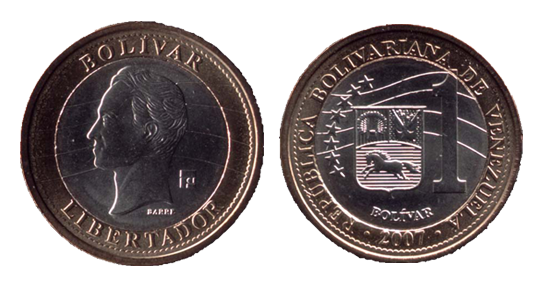

“¡Hay que terminar!”
Un futbolista con camisa Adidas grita desde las bandas mientras sus compañeros hacen un ejercicio de cuatro contra cuatro. La próxima oleada de los defensores entra a la cancha, levantando trozos de pasto a su paso. Otro jugador, vestido completamente de blanco a excepción de sus botas de color amarillo neón, se desliza hacia la pelota y un jugador ofensivo se tropieza con él.
“¡Sigue jugando!”
La pelota viaja como una corriente entre los pies del defensor, mientras que él la dribla hacia la defensa. Un silbato señala que el ejercicio ha acabado.
El defensor, Laurenti Velasquez, trota sonreído fuera del campo. Cuando juega fútbol, se siente en control — de sí mismo, de su ambiente. Nada más le importa. No le importa la ira que siente sabiendo que sus dos hijos, de 3 y 5 años, están a 1500 kilómetros de distancia. Ni la tristeza, pensando en los estantes vacíos de los supermercados de su patria. Ni los millones de venezolanos que pasan semanas sin electricidad.
Pero cuando sale de la cancha, todo le vuelve. Velasquez, quien tiene 25 años de edad, emigró a Colombia en el 2016, pero Venezuela siempre está en su mente. Él manda, más o menos, el 40 por ciento de su sueldo trabajando como almacenista en Distripartes, un taller mecánico, a sus hijos cada mes — esto equivale a $380,000 pesos colombianos, o USD $119.
Distripartes le ofrece a Laurenti beneficios que nunca había tenido en sus otros trabajos ocasionales en Colombia. Ha estado ahí por siete meses y tiene seguro, horas extra pagadas y comisiones por sus ventas. Financieramente, su vida es mejor que en Venezuela, pero el costo de vivir aquí es mucho más alto. En Venezuela no pagaba alquiler, y los gastos mensuales de la comida y el transporte eran una fracción de lo que cuestan en Colombia. Estos gastos lo obligan a hacer sacrificios en su nuevo país, como alquilar un cuarto en casa de uno de sus compañeros del equipo en vez de tener su propio apartamento.
“Los inmigrantes no pueden disfrutar los lujos de acá, como viajar,” dijo Velasquez. “En Venezuela, se podía ahorrar por estos momentos. Aquí se podría, pero sería tanto sacrificio.”

Laurenti Velasquez posa para una foto en Distripartes, el garaje en el que él trabaja.
Miles de venezolanos conocen ese sacrificio muy bien. En los últimos cinco años, la inflación ha subido desde 57 por ciento a 10 millones por ciento, en parte debido a la caída de los precios del petróleo, la fuente principal de ingresos del país. Desde entonces, más de 3 millones de venezolanos han huido del país, alrededor del 10 por ciento de la población total. Más de un tercio de ellos están en Colombia ahora. A los que se quedan les cuesta pagar por la comida, los medicamentos y otras necesidades básicas. Muchos dependen de las remesas de sus seres queridos. En el año 2018, se estima que los venezolanos viviendo fuera del país mandaron más de $1 billón de dólares a los familiares que no pueden emigrar.
“Estamos lejos de nuestra familia y de nuestro país, pero estamos aquí [porque] estamos luchando por ellos,” dijo Velasquez.
Cronología del Bolívar Venezolano
El bolívar es una moneda que siempre cambia
1879
") La moneda de Bolívar (Bs.)
La moneda de Bolívar (Bs.)
Bolívar
El bolívar (Bs.) era una moneda estable que estaba apoyada por la plata, el oro y el dólar estadounidense.
Bolívar
Cuando la inflación surgió, se creó monedas y billetes más grandes.
1998
El billete de banco de Bolívar (Bs.)2008
 La moneda de Bolívar Fuerte (BsF.)Bolívar fuerte
El Bolívar fuerte (BsF.) reemplazó el Bolívar y se quitó tres ceros de la moneda. La inflación no cambió, aunque los números fueron diferentes.
Bolívar fuerte
Otra vez, la inflación causó una necesidad de monedas y billetes más grandes.
2016
El billete de banco de Bolívar Fuerte (BsF.)2018
 La moneda de Bolívar Soberano (BsS.)
La moneda de Bolívar Soberano (BsS.)
Bolívar soberano
El Bolívar soberano (BsS.) reemplazó el Bolívar fuerte y se quitó cinco ceros de la moneda.
Bolívar soberano
El Bolívar soberano es la moneda actual, pero básicamente no vale nada.
2019
 El billete de banco de Bolívar Soberano (BsS.)
El billete de banco de Bolívar Soberano (BsS.)
* Datos de DW, Republic de Venezuela, CNN y OANDA.
Al lado de la portería, Velasquez se balancea de un pie al otro, esperando su turno en el ejercicio. Su entrenador camina hacia mediocampo, impávido con los jugadores luchando por la pelota a su alrededor. Cuando llega al centro del campo, echa una mirada a la cancha, observando los jugadores perfeccionando la técnica.
“Ahí está.” El entrenador asiente, y otro silbato termina el ejercicio.
Los futbolistas trituran el pasto debajo de sus botas mientras se congregan en el mediocampo, jadeando por la intensidad del entrenamiento. El entrenador, Alvaro Cardenas Martínez, observa cada una de las caras de su equipo. También está contento, pero por una razón diferente que la de Velasquez. Son casi las 10 de la noche en un miércoles entre semana, y él está aquí en un campo deportivo público. Aunque ya es tarde, se preocupa por la técnica de sus jugadores en vez de su propia seguridad.

Vista aérea de la Unidad Deportiva de Belén Andrés Escobar, donde practica el Vinotinto Fútbol Club.
Nunca podría hacer algo así en Venezuela.
En el año 2014 — cuando Martínez emigró a Colombia — la situación en Venezuela empeoró. No solo la economía era un desastre, sino también la seguridad pública. Martínez, quien tiene 37 años de edad, no podía ir al supermercado sin cuidarse las espaldas constantemente. Odiaba esperar en los semáforos porque tenía miedo de los motociclistas que robaban o mataban a gente diariamente.
“Te empiezas ya a mover por el miedo, por la inseguridad en ese estrés de que sales a la calle por la mañana de tu casa y no sabes si vas a regresar,” dijo Martínez. En el 2017, La Embajada Estadounidense de Caracas informó que 73 venezolanos mueren violentamente a diario. “Antes de que fuésemos nosotros a ser una estadística más de unos muertos en Venezuela, pues preferí entonces emigrar y buscar una mejor calidad de vida.”
“Hay gente que lo apoya [a Maduro], porque si a usted no le falta nada, usted está bien. Pero no le importa su hermano que se está muriendo de hambre.”
Martínez es uno de los más afortunados. Sus padres colombianos le dieron el privilegio de la doble ciudadanía venezolana-colombiana, entonces él y su esposa vivieron con su abuela en Medellín hasta que pudieran ayudarse a sí mismos. No demoró mucho debido a las habilidades empresariales naturales de Martínez. Abrió una tienda de mascotas, y cuando se dio cuenta de que no le estaba yendo bien, la cerró y empezó una compañía de telecomunicaciones que todavía maneja hoy.
En dos años, consiguió su propio hogar, un negocio estable y la tranquilidad. Pero le faltaba algo.
“En el deporte y en el fútbol específicamente, qué es lo que nosotros hacemos, lo haces con otras personas,” dijo Martínez. “Entonces al darme cuenta que estoy solo, al final, mirar para los lados y no tener con quien jugar… Y me imaginé que así como estaba yo seguramente habían muchos venezolanos pensando lo mismo.”
Ingresó en una de las páginas de Facebook para venezolanos y empezó a escribir: “Busco gente para un equipo de fútbol…”
“Si tienes un sueño, trabaja y lógralo,” dijo Martínez. “Si eres inmigrante, tienes que asegurarte de que estés estable de otras maneras primero.”
En las calles de Venezuela, los artesanos montan mesas en las aceras de cruces abarrotados. Cada mesa tiene billetes venezolanos multicolor apilados como periódicos. Los artesanos barajan los billetes — millones en cada manojo — entre las manos, y no se preocupan por los transeúntes que podrían robárselos.
Hace diez años, el dinero sobre la mesa — bolívares venezolanos — los hubiese hecho millonarios. Hoy en día, los billetes valen tan poco que la gente los usa para hacer carteras y esculturas.
“Venezuela era un país muy grande — no [íbamos a preparar nada],” dijo Lilia Martínez, la madre de Martínez, quien vivió en Venezuela por 40 años hasta el 2017, cuando regresó a Colombia. “Nunca pensamos que estuviéramos peor que Cuba.”
En el 2014, el Banco Central de Venezuela dejó de publicar cierta información, como la tasa de inflación y los gastos públicos, porque el gobierno del Presidente Nicolás Maduro no quería que el público supiera cómo la economía había disminuido. En el 2017, más del 87 por ciento de la población vivía por debajo de la línea de pobreza.
Hoy en día, una caja de cereal cuesta más que el salario mensual del venezolano promedio. La gente no puede costearse la vivienda o los artículos de uso personal.
En enero, el Presidente de la Asamblea Nacional Juan Guaidó se declaró presidente interino después de que se consideró ilegítima la segunda elección de Maduro. Los Estados Unidos, Canadá, Brasil y aproximadamente 50 otros países han reconocido a Guaidó como presidente. Rusia, China y Cuba todavía apoyan Maduro.
Guaidó ha intentado coordinar el ingreso de ayuda humanitaria, pero los funcionarios de Maduro en la frontera colombiana bloquearon camiones llenos de necesidades. Maduro ve esos esfuerzos como intentos para derrocarlo.
“Hay gente que lo apoya [a Maduro],” dijo Lilia. “Porque si usted no le falta nada, usted está bien. Pero no le importa su hermano que está muriendo de hambre.”
Después de docenas de respuestas a su publicación de Facebook, Martínez fundó el Vinotinto Fútbol Club. Más o menos 70 venezolanos y 15 colombianos forman dos equipos, separados por edad.
Cada semana sobre las 8 de la noche, se reúnen en una gradería en la Unidad Deportiva de Belén Andrés Escobar antes el entrenamiento. Los hombres llegan lentamente, algunos con mochilas en las espaldas y otros con tentempiés caseros envueltos en servilletas. Los que llegan vestido en las zapatillas las cambian por botas sobre sus calcetines de fútbol, pero no antes de que se saludan entre sí.
“Hola ‘mano.”

Laurenti Velasquez y Álvaro Cárdenas Martínez caminan hacia el campo de fútbol con el resto del equipo. “Lo más hermoso es que Laurenti, y el resto de nosotros que somos inmigrantes, encontramos a la familia que dejamos atrás en el equipo,” dijo Martínez.
Los hombres no solo bromear entre sí, sino también los apoyan unos a otros. Velasquez tiene su trabajo en el taller mecánico porque Martínez lo recomendó. Sin la recomendación, todavía habría trabajado en una tienda de comida rápida u otro trabajo de nivel entrada. Definitivamente no habría trabajado a Distripartes — él es el único venezolano que trabaja ahí.
“Yo soy muy agradecido,” dijo Velasquez. “Hay empleos que no aceptan venezolanos porque creen que el venezolano viene a robar, que el venezolano es flojo. He dado buena cara de venezolanos, de lo que somos los venezolanos en realidad. Entonces, como yo estoy satisfecho con mi empleo, ellos están satisfecho conmigo como empleado.”
“Lo más bonito porque tanto Laurenti, como el resto del equipo, cada que de los que somos inmigrantes, encuentran en este grupo esa familia que dejan atrás. Encuentran en este grupo esas personas con las cuales tú hablas venezolano, no español.”
Velasquez y el resto del Vinotinto han experimentado la discriminación también en la cancha. Ya que es el único equipo en la liga con jugadores venezolanos, otros equipos los identifican y gritan insultos.
En vez de enfocando en los agravios, el equipo se concentra en su técnica, sus jugadas y su comunicación — cuando está y no está en la cancha.
“Lo más bonito porque tanto Laurenti, como el resto del equipo, cada que de los que somos inmigrantes, encuentran en este grupo esa familia que dejan atrás,” dijo Martínez. “Encuentran en este grupo esas personas con las cuales tú hablas venezolano, no español.”